This exercise continues where the Process Incoming Data exercise left off. You should complete the previous exercise then continue with this exercise.
After completing this lesson, you'll be able to:
FME Flow Automations have the ability to send email notifications to external clients with the Email (send) external action. The Email action requires you to authenticate and validate a connection to an external SMTP email server. Flow uses this email server to send the outgoing emails.
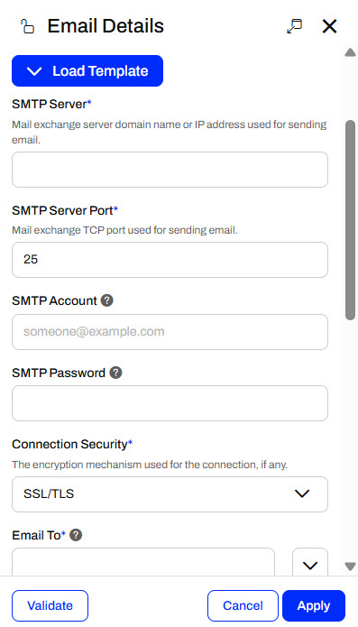
While there are many SMTP connection parameters that you must configure, FME Flow has a Load Template option that makes it a bit easier. You may select email connection templates for Gmail, Outlook, Office 365, or Yahoo. With a template, FME Flow defines the SMTP Server and Port for the email server you are using. You must still fill in your SMTP Account and Password and any other connection parameters.
In the Email Details, you also set the recipients of our email and configure the subject, body, and an optional email attachment. You may send emails to multiple recipients, and optionally carbon copy or blind carbon copy recipients.
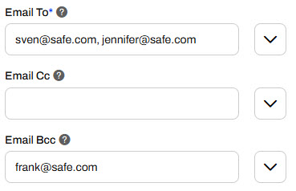
Many of the Email parameters also allow you to use Output Attributes and Automation Parameters to further customize and control your outgoing emails with information from previous actions in the Automation. For example, you can set the Email Subject to include the job status of the previous workspace action, include the job log or any file from Resources as an attachment, and customize the email body with more information about the Automation.
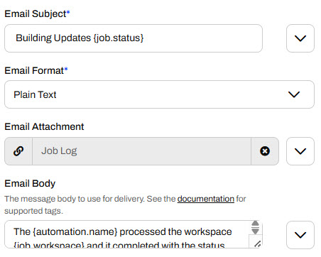
It's easiest to customize the outputs using the Text Editor, where you can select from all the available Output Attributes.
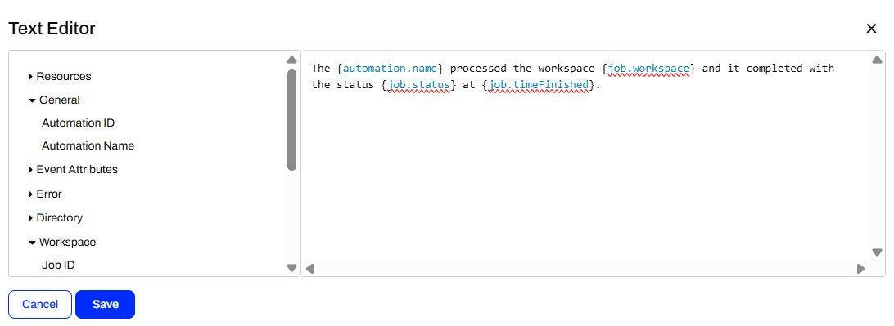
With the previous settings, FME Flow generates an email that looks like this when the Automation triggers and runs.
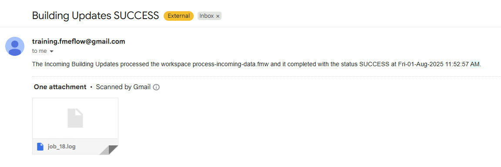
You may also be familiar with the Emailer transformer, which sends emails from within workspaces. The Emailer is similar to the Email external action; however, there are some key differences that will guide you to select the most appropriate one for your workflow.
You configure an Emailer with almost all the same SMTP account parameters; however, you can use a web connection to connect to your SMTP email account.
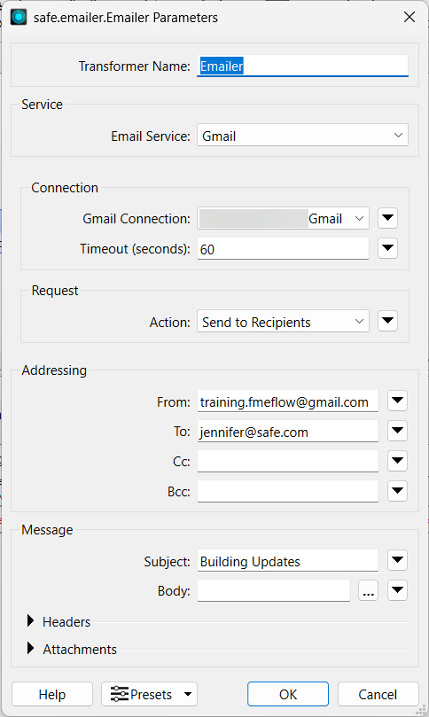
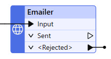
Advantages of using the Emailer include:
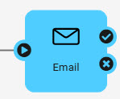
Advantages of the Email action in Automations include:

Jennifer continues with her Incoming Building Updates Automation. The Automation has a Resource or Network Directory trigger that watches for files added to an FME Flow Resources folder and a Filter action to filter shapefiles. Then, it runs a workspace to process incoming files. It's vital to update the geodatabase with the most recent construction updates, so Jennifer would like to notify herself when the workspace runs with its translation status.
Follow along with Jennifer's steps as she creates an Email External Action to notify herself after the workspace completes in her Automation.
Jennifer navigates to FME Flow and opens her Incoming Building Updates Automation. If the Automation is running, she stops it to edit it.
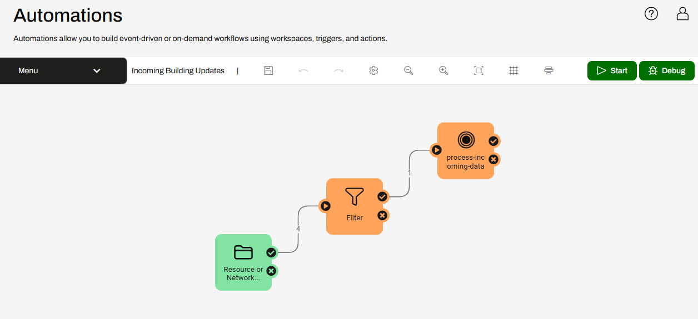
Jennifer adds an external action to the canvas and connects it to the success and failure ports of the process-incoming-data workspace.
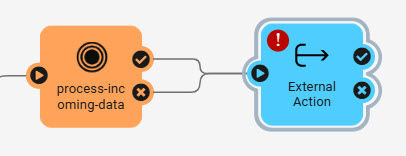
By connecting the action to both ports, the external action will run whether the workspace translation succeeds or fails.
Jennifer opens the External Actions Details and selects the Email (send) action.

Jennifer will configure the action to use a Gmail account, so she selects Gmail using the Load Template option and pre-populates some of the SMTP parameters.

Jennifer enters these values for the SMTP parameters:
This Gmail account password changes regularly. Please only use it for FME training purposes, or configure your SMTP account for the Email action.
Jennifer enters her email for the Email To parameter and uses training.fmeflow@gmail.com for the Email From parameter.
For the Email Subject, Jennifer uses the drop-down menu to select the Text Editor. She types Building Updates and then uses the Workspace action output attribute Job Status to indicate whether the translation succeeds or fails in the subject.
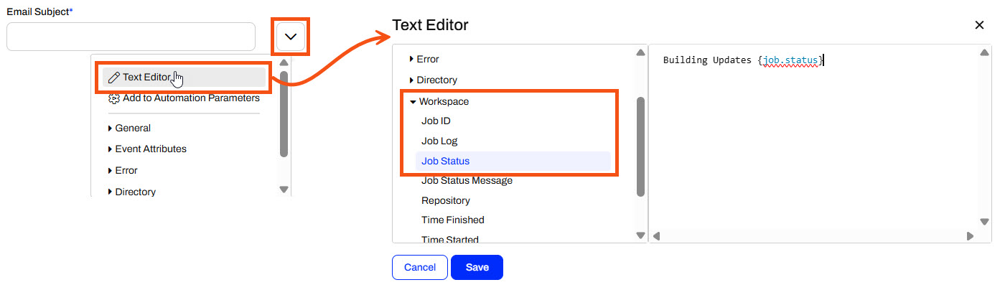
She uses the drop-down menu again for the Email Attachment to select the Job Log for the workspace.
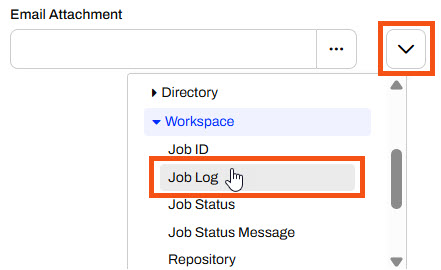
Once Jennifer enters all the required parameters, she clicks Validate to ensure her SMTP email settings are valid.
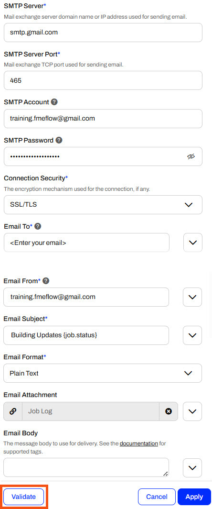
Once Jennifer's parameters are valid, she clicks Apply to close the Email action details.
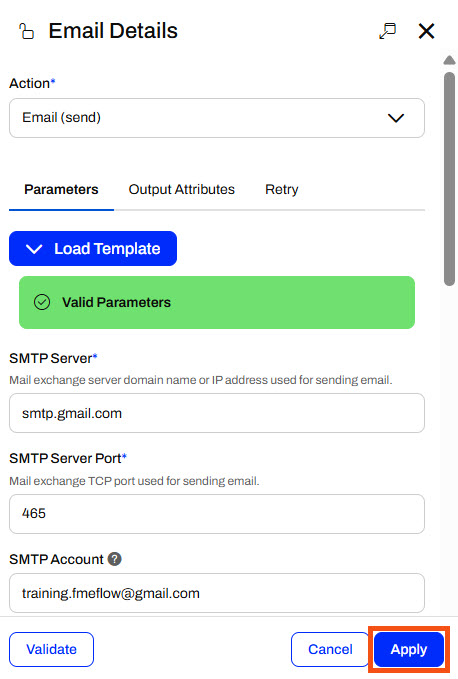
If you receive an Invalid Parameters error, check that you have provided values for all required parameters. If you still encounter an error, see FME Flow Troubleshooting: Email.
Jennifer saves the Automation and clicks Start to monitor the Resources location for files again.
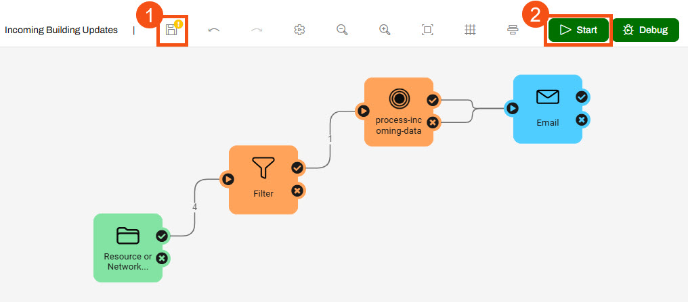
With her Automation running, Jennifer navigates to Resources > Data > BuildingUpdates. She uploads another shapefile of building updates (C:\FMEData\Data\Engineering\BuildingFootprints) to the folder.
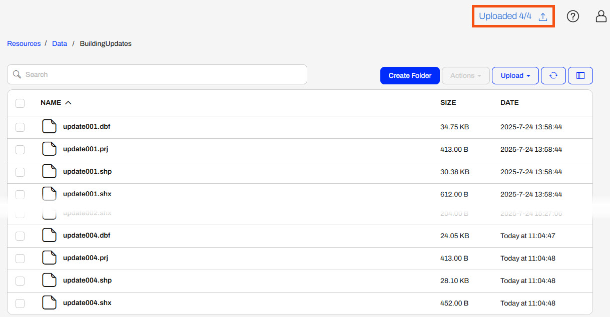
Jennifer waits a few moments for the Automation process to complete and then checks her email. She receives an email with the job status in the subject line and the job log as an attachment.
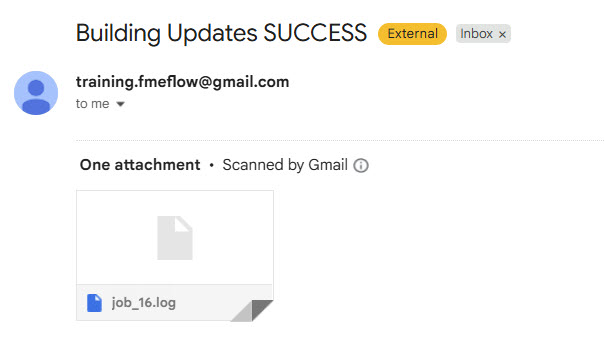
Jennifer has now built an entire workflow with FME Flow Automations. She uses a trigger to watch for new files, filters those files, and runs a workspace if the files meet the condition. Once her workspace completes, an email sends to update Jennifer with the job completion status. She can monitor her Automation from her inbox and otherwise leave it to run and process the incoming shapefiles without any repetitive manual effort.